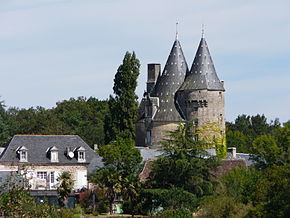

Перинья́к (фр. Peyrignac) — коммуна во Франции, находится в регионе Аквитания. Департамент — Дордонь. Входит в состав кантона От-Перигор-Нуар. Округ коммуны — Сарла-ла-Канеда. Код INSEE коммуны — 24324.
Достопремечательности Список мэров